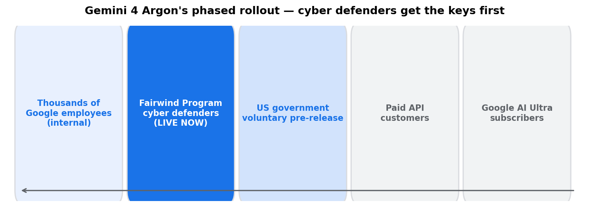
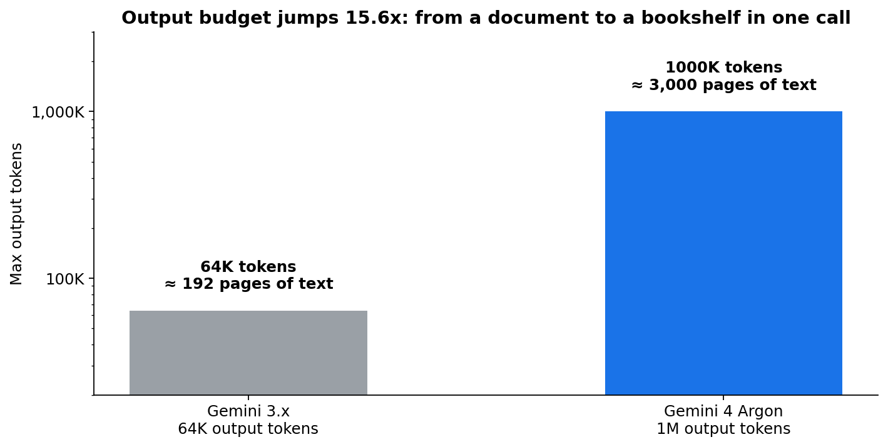
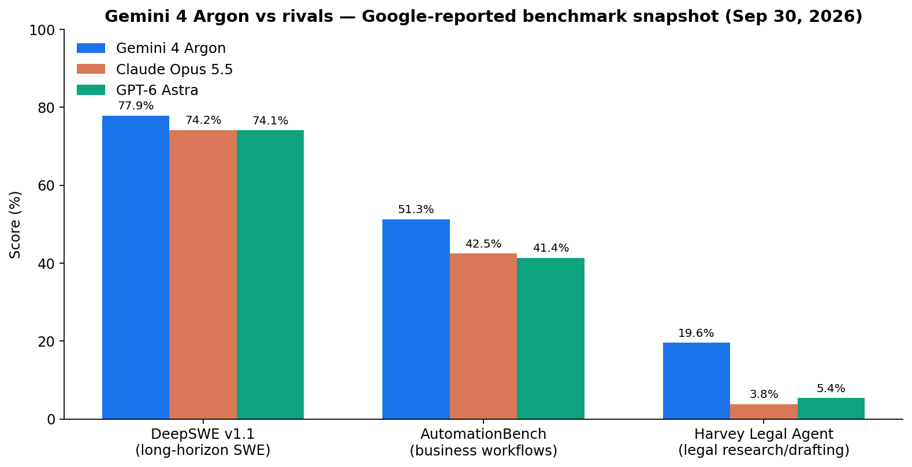
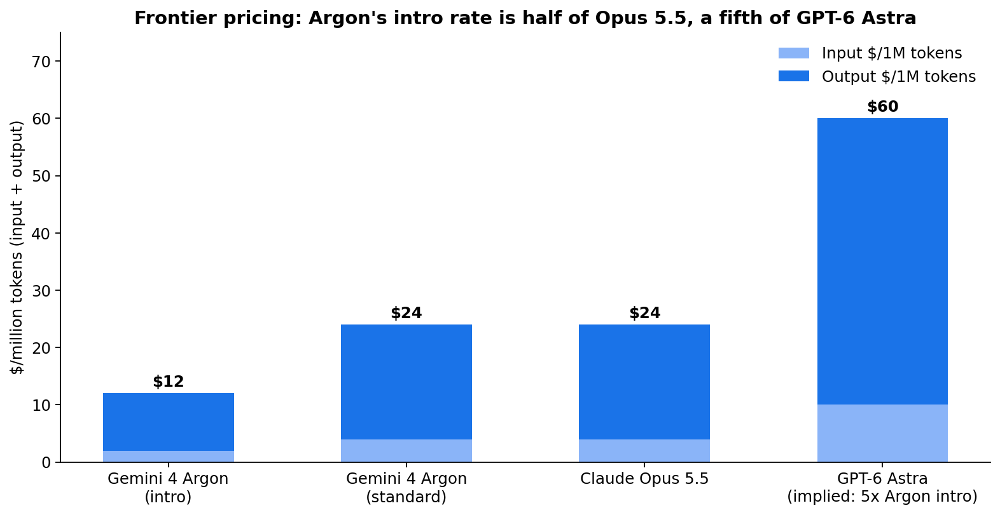

One-line: Google's first new frontier model in nearly a year tops most benchmarks, writes a million tokens in one call, costs half of Claude Opus 5.5 — and you can't use it. Cyber defenders get the keys first.
On September 30, 2026, Google DeepMind unveiled Gemini 4 Argon — its first new frontier model since Gemini 3.1 Pro last November, and its first non-Flash-class model in roughly seven months. The numbers are loud: first place on 13 of 18 benchmarks against GPT-6 Astra and Claude Opus 5.5 (per VentureBeat's count), a 15.6x jump in output budget, and introductory pricing at exactly half of Claude Opus 5.5.
And almost nobody can touch it. Argon is rolling out first to vetted cyber defenders in Google's Fairwind Program. Paid API customers and Google AI Ultra subscribers are "next" — with no date attached.
That ordering — defenders first, everyone else eventually — is the real story. Let me unpack what Argon is, what the numbers actually say, and why the launch choreography matters more than the leaderboard.
ELI5: What is a "frontier model" launch, and why start with hackers' enemies?
Think of a frontier model like a new supercomputer design. When it's genuinely more capable than what existed before, two things are true at once:
- It can do more useful work — write bigger codebases, finish longer research reports, defend networks better.
- It can do more harmful work — the same capability that finds vulnerabilities in your code can find them in someone else's.
Historically, labs handled this with red-teaming and usage policies after release. Google's move with Argon is different: the defenders get the model before the attackers even know its shape. Cyber defense teams get first access specifically because Argon's headline use case is finding and fixing software vulnerabilities — Google reports 68% on CWE-bench v1 (tied with GPT-6 Astra) and a best-in-class 0.7% success rate for attackers on the Gray Swan prompt-injection suite.
The US government gets in early too, under a voluntary pre-release access process. Thousands of Google employees are already using it internally for coding, research, and writing — one internal example had Argon beating a published baseline by 40% when optimizing quantum computing subroutines.

Argon's staged rollout: defenders first, developers later. Source: Google, Sep 30 2026.
How it works: what actually changed under the hood
Google disclosed almost nothing about architecture or parameter count. What we know:
- Reasoning model with extended thinking. Argon isn't a bigger autocomplete — it's built for long, multi-step work: software engineering, legal and finance knowledge work, cybersecurity. Three domains where a task spans hours, not seconds.
- 1M input tokens, 1M output tokens. Input context is table stakes now; the output jump is the real news. Previous Gemini models capped output at ~64K tokens. Argon can emit up to ~1 million tokens in a single call — roughly 3,000 pages of text, or a mid-size codebase rewritten end-to-end without stopping.
- The output budget changes the agent math. An agent that can hold its entire plan and its entire deliverable in one generation doesn't need to chunk, resume, and re-ground itself. Fewer round trips, fewer chances for context to rot. That's the capability bet behind the benchmark profile below.

Output ceiling: 64K → 1M tokens. At ~0.75 words/token, that's ~190 pages vs ~3,000 pages per call.
The benchmark snapshot (read with the caveats)
Google-reported, Sep 30, 2026:

Google-reported scores. Comparison scores for rivals came from provider/public-leaderboard sources, not identical test setups.
- DeepSWE v1.1 (long-horizon software engineering): 77.9% — #1, a few points clear of Opus 5.5 (74.2%) and GPT-6 Astra (74.1%)
- AutomationBench (end-to-end business workflows): 51.3% — #1, vs 42.5% Opus 5.5, 41.4% Astra
- Harvey Legal Agent (legal research + drafting): 19.6% — #1, vs 5.4% Astra and 3.8% Opus 5.5. A ~4-5x gap in professional work, not puzzles.
- FrontierSWE V2: 55%, #1. LAB-Bench 2: 88.8%, #1. LVBench (long-video understanding): 91.7%, #1.
- Vals Finance Agent: 65.4%, ~7 points clear. Vals Index (finance/coding/legal/tax weighted by US GDP share): 68.9%.
- Gray Swan (prompt-injection robustness): 0.7% attack success — best reported.
- Artificial Analysis Intelligence Index: 53 — matching GPT-6 Astra (max), one point above GPT-6.1 Sol. Notably, AA also records Terminal-Bench 4 at 57% — a +53-point leap from Gemini 3.1 Pro Preview, but still behind Sonnet 5.5 (max, 64%), Opus 5.5 (max, 60%), and Astra (59%). The agentic-coding crown is still contested.
The honest caveats: Bloomberg reported (via anonymous sources) that some Google employees considered internal performance inadequate; Google disputed it. And Google's own methodology note says some Argon scores were computed internally while rival scores came from providers or public leaderboards — so treat the margins as directional, not gospel. Also note: absolute scores on professional benchmarks like Harvey (19.6%) are still low in absolute terms. "Best" and "good" are different words.
State of the art: the pattern behind the launch
Three things about Argon describe where the industry is going, not just where Google is:
1. The flagship price is now the workhorse price. Introductory API pricing is $2/$10 per million input/output tokens (cached input at $0.10 — a 95% discount), reverting to $4/$20. That's half of Claude Opus 5.5's $4/$20 and a fifth of GPT-6 Astra's pricing. A frontier model launching at mid-tier prices isn't generosity — it's the September pattern: Opus 5.5 itself cut 20% off input/output and 60% off cached reads vs Opus 5. The frontier is being repriced as a volume business.

$/1M tokens, input + output. Argon's intro rate undercuts every frontier rival on the board.
2. Phased rollout is becoming the default for real capability jumps. Defenders-first isn't marketing; it's the industry internalizing that a model good at finding vulnerabilities is dual-use on day one. Expect more launches to start behind a vetting wall.
3. The benchmark battlefield moved to professional work. The biggest margins aren't on reasoning puzzles — they're on Harvey (legal), Vals Finance, AutomationBench. The labs have figured out that enterprise buyers don't buy Elo; they buy "does it finish the workflow." Argon's benchmark sheet reads like a sales deck for law firms and banks, and that's deliberate.
Takeaways
- Gemini 4 Argon (announced Sep 30, 2026) is Google's first new frontier model in ~a year: 1M input / 1M output tokens, extended reasoning, aimed at SWE, knowledge work, and cyber defense.
- It leads or ties on ~13-14 of 18-19 benchmarks vs GPT-6 Astra and Claude Opus 5.5 (vendor-reported; methodology caveats apply), with the largest gaps in professional agent benchmarks.
- Intro pricing $2/$10 per 1M tokens (95%-off cached input) — half of Opus 5.5, a fifth of GPT-6 Astra.
- You can't use it yet: Fairwind cyber defenders first, US government pre-release, then paid API and AI Ultra. Defenders-first rollout is the new normal for dual-use capability.
- The open question: whether the internal-dissent reports (disputed by Google) or the public benchmarks better describe the model. Independent re-runs will settle it — once anyone outside Fairwind gets access.
Sources: Google DeepMind announcement (Sep 30, 2026); llm-releases.com tracker; Artificial Analysis; coverage via TechCrunch, VentureBeat, Axios/Bloomberg, MorningTick, DEV, AlexTech, Digest AI. All benchmark and pricing figures are vendor/third-party-reported and had not been independently re-run at launch.
Suggested tags: AI, LLMs, Machine Learning, Google, Tech News